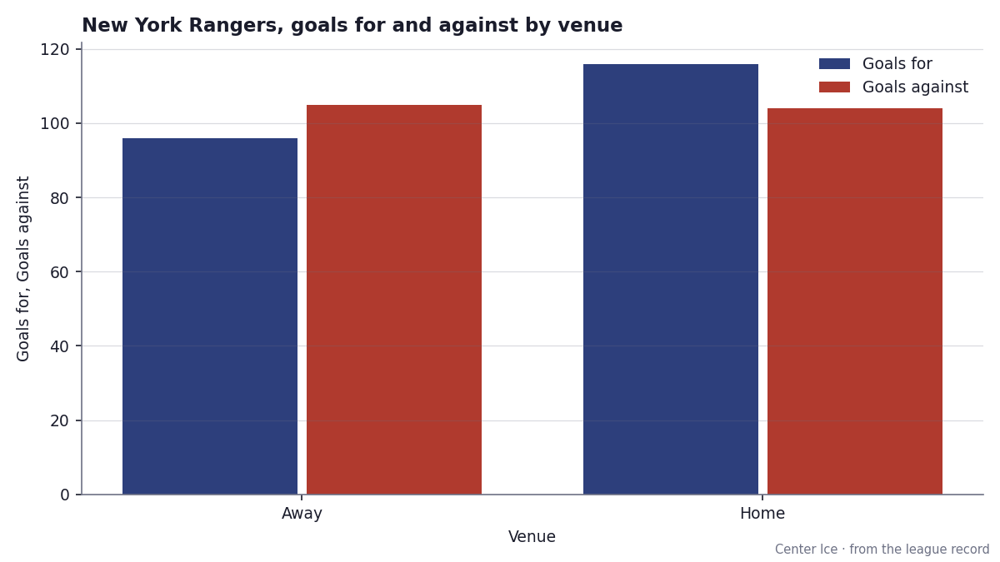

Letters to the editor
The Postbag: ten meetings, ten losses, and a four-game run the league decided to ignore
St. Louis finally won some and nobody printed it. Two clubs cannot beat one opponent. One club leaves its scoring at home.
Sunday, 13 February 2005 · edited by Tunde Oyelaran
This edition prints a run in St. Louis the national pages passed over, two clubs that have not beaten one opponent in five tries, and a club whose scoring leaves when the team does.
We have won 4 in a row and I have not read a word about it anywhere. What does this club have to do?
Verna Kaltenbrunner, Kirkwood
The four-game run started on February 5 at home against  Carolina Hurricanes, 3-2. Then 3-2 on the road at
Carolina Hurricanes, 3-2. Then 3-2 on the road at  Minnesota Wild on February 7, 3-1 on the road at
Minnesota Wild on February 7, 3-1 on the road at  San Jose Sharks on February 8, and 3-2 on the road at
San Jose Sharks on February 8, and 3-2 on the road at  Detroit Red Wings on February 10. Three of those were one-goal road wins.
Detroit Red Wings on February 10. Three of those were one-goal road wins.  St. Louis Blues sits at 16-27-4, 52 points in 55 games, 171 for against 212 against. 8 of the club's wins have come in overtime. Those 8 wins are worth 16 points in the standings, and they say this club is close enough to force the extra period and this week the extra period went their way.
St. Louis Blues sits at 16-27-4, 52 points in 55 games, 171 for against 212 against. 8 of the club's wins have come in overtime. Those 8 wins are worth 16 points in the standings, and they say this club is close enough to force the extra period and this week the extra period went their way.
The schedule sends them to  Chicago Blackhawks tomorrow. Chicago Blackhawks is 9-17 at home.
Chicago Blackhawks tomorrow. Chicago Blackhawks is 9-17 at home.
We have played PIT 5 times and not beaten them once. At what point is that a pattern and not bad luck?
Rosalind Fairweather, Hicksville
Five meetings, 0 wins, 4 regulation losses, 1 overtime loss. The overtime loss is worth 1 point, and that 1 point is the entire harvest  New York Islanders extracted from
New York Islanders extracted from  Pittsburgh Penguins this season. Five games for a single standing point. The division schedule carries 2 more meetings, which means New York Islanders can still finish 0-7 against a club sitting at 16-25-7 with 53 points. You asked at what point it becomes a pattern. I would say the pattern arrived at meeting three. The first two were coin flips. The last three were decided by 2 or more goals.
Pittsburgh Penguins this season. Five games for a single standing point. The division schedule carries 2 more meetings, which means New York Islanders can still finish 0-7 against a club sitting at 16-25-7 with 53 points. You asked at what point it becomes a pattern. I would say the pattern arrived at meeting three. The first two were coin flips. The last three were decided by 2 or more goals.
5 straight losses. Is anybody at this club going to say something, or do we all just watch?
Priya Ramanathan, Campbell
San Jose Sharks has the longest active losing streak in the league, L5. The club is 17-27-9, 51 points in 57 games, 159 goals for, 187 against. The 9 overtime losses are the most in the Pacific division. Over the last 10 games the club has scored 16 and allowed 26.  Patrick Marleau88 has 42 goals and 82 points in 57 games; the team total is 159 goals across the whole season, which means no one else on the roster is carrying the offensive load. They host
Patrick Marleau88 has 42 goals and 82 points in 57 games; the team total is 159 goals across the whole season, which means no one else on the roster is carrying the offensive load. They host  Philadelphia Flyers tonight. Philadelphia Flyers is 20-23-7 on a one-game losing streak, and its road record reads 9-19. If San Jose Sharks cannot beat that on its own ice, five straight starts to look permanent.
Philadelphia Flyers tonight. Philadelphia Flyers is 20-23-7 on a one-game losing streak, and its road record reads 9-19. If San Jose Sharks cannot beat that on its own ice, five straight starts to look permanent.
We have played EDM 5 times and not beaten them once. At what point is that a pattern and not bad luck?
Solveig Aakerlund, Bloomington
The five meetings between Minnesota Wild and  Edmonton Oilers ended by one goal every single time. Three regulation losses, two in overtime. Minnesota Wild scored 15, allowed 20, and left the series with 2 points. November 12: 3-4 at home. December 3: 2-3 on the road. December 17: 4-5 at home, the only five-goal game either club scored in. January 2: 4-5 on the road in overtime. January 29: 2-3 on the road in overtime. The schedule is finished between these two. No 6th meeting exists.
Edmonton Oilers ended by one goal every single time. Three regulation losses, two in overtime. Minnesota Wild scored 15, allowed 20, and left the series with 2 points. November 12: 3-4 at home. December 3: 2-3 on the road. December 17: 4-5 at home, the only five-goal game either club scored in. January 2: 4-5 on the road in overtime. January 29: 2-3 on the road in overtime. The schedule is finished between these two. No 6th meeting exists.
Minnesota Wild is 16-29-5 with 49 points in 56 games. Its payroll reads $29.97M, the smallest number in the league. Edmonton Oilers carries $36.81M and 73 points. Five one-goal losses against a club spending seven million more is a gap you can name.
We are a different team on the road and nobody will say why. Is it the travel, or is it an excuse?
Aaron Lindqvist, Yonkers
 New York Rangers is 19-11 at home and 11-17 away. The goals against barely move between the halves: 104 allowed in 30 home games, 105 allowed in 28 road games. The goals for drop from 116 at home to 96 on the road. The back end holds; the front end does not.
New York Rangers is 19-11 at home and 11-17 away. The goals against barely move between the halves: 104 allowed in 30 home games, 105 allowed in 28 road games. The goals for drop from 116 at home to 96 on the road. The back end holds; the front end does not.

 Eric Lindros87 has 89 points in 58 games.
Eric Lindros87 has 89 points in 58 games.  Petr Nedved86 has 88 in 58.
Petr Nedved86 has 88 in 58.  Mike Dunham88 has a 3.43 GAA and a 0.851 save percentage. The scoring and the goaltending are on the sheet. On the road the offense stops producing. The sheet carries no facility penalty on New York Rangers's travel or rooms that would explain the gap. New York Rangers pays $77.49M in payroll, the second-largest in the league, and pays $1.19M per point. At home the club looks like a playoff team. On the road it looks like a team that will need to be healthy in April to finish fourth in its conference. You asked whether it is travel or an excuse. The record says the defense travels fine and the offense does not, and nobody has offered a better explanation than that.
Mike Dunham88 has a 3.43 GAA and a 0.851 save percentage. The scoring and the goaltending are on the sheet. On the road the offense stops producing. The sheet carries no facility penalty on New York Rangers's travel or rooms that would explain the gap. New York Rangers pays $77.49M in payroll, the second-largest in the league, and pays $1.19M per point. At home the club looks like a playoff team. On the road it looks like a team that will need to be healthy in April to finish fourth in its conference. You asked whether it is travel or an excuse. The record says the defense travels fine and the offense does not, and nobody has offered a better explanation than that.